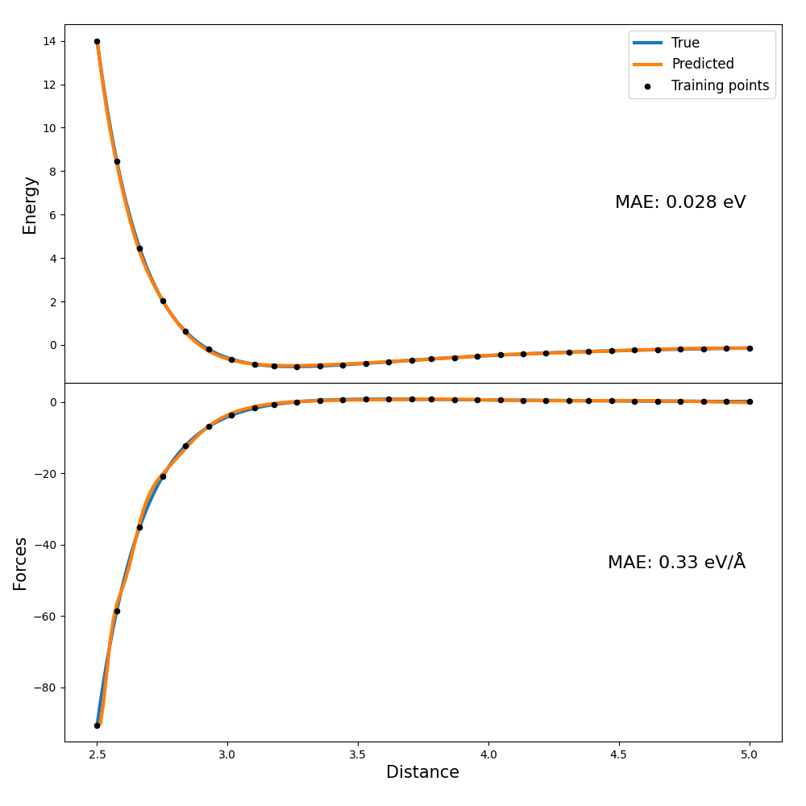

Supervised Learning: Training an ML Force-field¶
Note
We are incrementally adding support for calculating the derivatives of descriptors with respect to the atom positions. From version 1.0.0 upwards you can find an implementation for getting derivatives of non-periodic systems for the SOAP descriptor.
This tutorial covers how descriptors can be effectively used as input for a machine learning model that will predict energies and forces. There are several design choices that you have to make when building a ML force-field: which ML model, which descriptor, etc. In this tutorial we will use the following, very simple setup:
Dataset of two atoms interacting through a Lennard-Jones potential. This is pretty much as simple as it gets. Real systems will be much more complicated thus requiring a more complicated machine learning model and longer training times.
SOAP descriptor calculated directly between the two atoms. Once again this is for simplicity and in real systems you would have many more centers, possibly on top of each atom.
We will use a fully connected neural network to perform the prediction. In principle any machine learning method will do, but neural networks can very conveniently calculate the analytical derivatives of the output with respect to the input. This allows us to train an energy prediction model from which we will automatically get the forces as long as we also know the derivatives of the descriptor with respect to the atomic positions. This is exactly what the
derivatives-function provided by DScribe returns (you will needdscribe>=1.0.0).
Setup¶
We will use a dataset of feature vectors \(\mathbf{D}\), their derivatives \(\nabla_{\mathbf{r_i}} \mathbf{D}\) and the associated system energies \(E\) and forces \(\mathbf{F}\) for training. We will use a neural network \(f\) to predict the energies: \(\hat{E} = f(\mathbf{D})\). Here variables with a “hat” on top indicate predicted quantities to distinguish them from the real values. The predicted forces can be directly computed as the negative gradients with respect to the atomic positions. For example the force for atom \(i\) can be computed as (using row vectors):
In these equations \(\nabla_{\mathbf{D}} f\) is the derivative of the ML model output with respect to the input descriptor. As mentioned before, neural networks typically can output these derivatives analytically. \(\nabla_{\mathbf{r_i}} \mathbf{D}\) is the descriptor derivative with respect to an atomic position. DScribe provides these derivatives for the SOAP descriptor. Notice that in the derivatives provided by DScribe last dimension loops over the features. This makes calculating the involved dot products faster in an environment that uses a row-major order, such as numpy or C/C++, as the dot product is taken over the last, fastest dimension. But you can of course organize the output in any way you like.
The loss function for the neural network will contain the sum of mean squared error of both energies and forces. In order to better equalize the contribution of these two properties in the loss function their values are scaled by their variance in the training set.
Dataset generation¶
Note
The code for this tutorial can be found under examples/forces_and_energies/. Notice that if you want to run the training yourself, you will need to install pytorch.
The following script generates our training dataset:
import numpy as np
import ase
from ase.calculators.lj import LennardJones
import matplotlib.pyplot as plt
from dscribe.descriptors import SOAP
# Setting up the SOAP descriptor
soap = SOAP(
species=["H"],
periodic=False,
rcut=5.0,
sigma=0.5,
nmax=3,
lmax=0,
)
# Generate dataset of Lennard-Jones energies and forces
n_samples = 200
traj = []
n_atoms = 2
energies = np.zeros(n_samples)
forces = np.zeros((n_samples, n_atoms, 3))
r = np.linspace(2.5, 5.0, n_samples)
for i, d in enumerate(r):
a = ase.Atoms('HH', positions = [[-0.5 * d, 0, 0], [0.5 * d, 0, 0]])
a.set_calculator(LennardJones(epsilon=1.0 , sigma=2.9))
traj.append(a)
energies[i] = a.get_total_energy()
forces[i, :, :] = a.get_forces()
# Plot the energies to validate them
fig, ax = plt.subplots(figsize=(8, 5))
plt.subplots_adjust(left=0.1, right=0.95, top=0.95, bottom=0.1)
line, = ax.plot(r, energies)
plt.xlabel("Distance (Å)")
plt.ylabel("Energy (eV)")
plt.show()
# Create the SOAP desciptors and their derivatives for all samples. One center
# is chosen to be directly between the atoms.
derivatives, descriptors = soap.derivatives(
traj,
positions=[[[0, 0, 0]]] * len(r),
method="analytical"
)
# Save to disk for later training
np.save("r.npy", r)
np.save("E.npy", energies)
np.save("D.npy", descriptors)
np.save("dD_dr.npy", derivatives)
np.save("F.npy", forces)
The energies will look like this:

Training¶
Let us first load and prepare the dataset:
import numpy as np
import torch
from matplotlib import pyplot as plt
from sklearn.preprocessing import StandardScaler
from sklearn.model_selection import train_test_split
from sklearn.metrics import mean_absolute_error
torch.manual_seed(7)
# Load the dataset
D_numpy = np.load("D.npy")[:, 0, :] # We only have one SOAP center
n_samples, n_features = D_numpy.shape
E_numpy = np.array([np.load("E.npy")]).T
F_numpy = np.load("F.npy")
dD_dr_numpy = np.load("dD_dr.npy")[:, 0, :, :, : ] # We only have one SOAP center
r_numpy = np.load("r.npy")
# Select equally spaced points for training
n_train = 30
idx = np.linspace(0, len(r_numpy) - 1, n_train).astype(int)
D_train_full = D_numpy[idx]
E_train_full = E_numpy[idx]
F_train_full = F_numpy[idx]
r_train_full = r_numpy[idx]
dD_dr_train_full = dD_dr_numpy[idx]
# Standardize input for improved learning. Fit is done only on training data,
# scaling is applied to both descriptors and their derivatives on training and
# test sets.
scaler = StandardScaler().fit(D_train_full)
D_train_full = scaler.transform(D_train_full)
D_whole = scaler.transform(D_numpy)
dD_dr_whole = dD_dr_numpy / scaler.scale_[None, None, None, :]
dD_dr_train_full = dD_dr_train_full / scaler.scale_[None, None, None, :]
# Calculate the variance of energy and force values for the training set. These
# are used to balance their contribution to the MSE loss
var_energy_train = E_train_full.var()
var_force_train = F_train_full.var()
# Subselect 20% of validation points for early stopping.
D_train, D_valid, E_train, E_valid, F_train, F_valid, dD_dr_train, dD_dr_valid = train_test_split(
D_train_full,
E_train_full,
F_train_full,
dD_dr_train_full,
test_size=0.2,
random_state=7,
)
# Create tensors for pytorch
D_whole = torch.Tensor(D_whole)
D_train = torch.Tensor(D_train)
D_valid = torch.Tensor(D_valid)
E_train = torch.Tensor(E_train)
E_valid = torch.Tensor(E_valid)
F_train = torch.Tensor(F_train)
F_valid = torch.Tensor(F_valid)
dD_dr_train = torch.Tensor(dD_dr_train)
dD_dr_valid = torch.Tensor(dD_dr_valid)
Then let us define our model and loss function:
class FFNet(torch.nn.Module):
"""A simple feed-forward network with one hidden layer, randomly
initialized weights, sigmoid activation and a linear output layer.
"""
def __init__(self, n_features, n_hidden, n_out):
super(FFNet, self).__init__()
self.linear1 = torch.nn.Linear(n_features, n_hidden)
torch.nn.init.normal_(self.linear1.weight, mean=0, std=1.0)
self.sigmoid = torch.nn.Sigmoid()
self.linear2 = torch.nn.Linear(n_hidden, n_out)
torch.nn.init.normal_(self.linear2.weight, mean=0, std=1.0)
def forward(self, x):
x = self.linear1(x)
x = self.sigmoid(x)
x = self.linear2(x)
return x
def energy_force_loss(E_pred, E_train, F_pred, F_train):
"""Custom loss function that targets both energies and forces.
"""
energy_loss = torch.mean((E_pred - E_train)**2) / var_energy_train
force_loss = torch.mean((F_pred - F_train)**2) / var_force_train
return energy_loss + force_loss
# Initialize model
model = FFNet(n_features, n_hidden=5, n_out=1)
# The Adam optimizer is used for training the model parameters
optimizer = torch.optim.Adam(model.parameters(), lr=1e-2)
Now we can define the training loop that uses batches and early stopping to prevent overfitting:
# Train!
n_max_epochs = 5000
batch_size = 2
patience = 20
i_worse = 0
old_valid_loss = float("Inf")
best_valid_loss = float("Inf")
# We explicitly require that the gradients should be calculated for the input
# variables. PyTorch will not do this by default as it is typically not needed.
D_valid.requires_grad = True
# Epochs
for i_epoch in range(n_max_epochs):
# Batches
permutation = torch.randperm(D_train.size()[0])
for i in range(0, D_train.size()[0], batch_size):
indices = permutation[i:i+batch_size]
D_train_batch, E_train_batch = D_train[indices], E_train[indices]
D_train_batch.requires_grad = True
F_train_batch, dD_dr_train_batch = F_train[indices], dD_dr_train[indices]
# Forward pass: Predict energies from the descriptor input
E_train_pred_batch = model(D_train_batch)
# Get derivatives of model output with respect to input variables. The
# torch.autograd.grad-function can be used for this, as it returns the
# gradients of the input with respect to outputs. It is very important
# to set the create_graph=True in this case. Without it the derivatives
# of the NN parameters with respect to the loss from the force error
# will not be populated (=the force error will not affect the
# training), but the model will still run fine without errors.
df_dD_train_batch = torch.autograd.grad(
outputs=E_train_pred_batch,
inputs=D_train_batch,
grad_outputs=torch.ones_like(E_train_pred_batch),
create_graph=True,
)[0]
# Get derivatives of input variables (=descriptor) with respect to atom
# positions = forces
F_train_pred_batch = -torch.einsum('ijkl,il->ijk', dD_dr_train_batch, df_dD_train_batch)
# Zero gradients, perform a backward pass, and update the weights.
# D_train_batch.grad.data.zero_()
optimizer.zero_grad()
loss = energy_force_loss(E_train_pred_batch, E_train_batch, F_train_pred_batch, F_train_batch)
loss.backward()
optimizer.step()
# Check early stopping criterion and save best model
E_valid_pred = model(D_valid)
df_dD_valid = torch.autograd.grad(
outputs=E_valid_pred,
inputs=D_valid,
grad_outputs=torch.ones_like(E_valid_pred),
)[0]
F_valid_pred = -torch.einsum('ijkl,il->ijk', dD_dr_valid, df_dD_valid)
valid_loss = energy_force_loss(E_valid_pred, E_valid, F_valid_pred, F_valid)
if valid_loss < best_valid_loss:
# print("Saving at epoch {}".format(i_epoch))
torch.save(model.state_dict(), "best_model.pt")
best_valid_loss = valid_loss
if valid_loss >= old_valid_loss:
i_worse += 1
else:
i_worse = 0
if i_worse > patience:
print("Early stopping at epoch {}".format(i_epoch))
break
old_valid_loss = valid_loss
if i_epoch % 500 == 0:
print(" Finished epoch: {} with loss: {}".format(i_epoch, loss.item()))
Analysis¶
When the training is done (takes around thirty seconds), we can enter the evaluation phase and see how well the model performs. We will simply plot the model response in the whole dataset input domain and compare it to the correct values:
# Way to tell pytorch that we are entering the evaluation phase
model.load_state_dict(torch.load("best_model.pt"))
model.eval()
# Calculate energies and force for the entire range
E_whole = torch.Tensor(E_numpy)
F_whole = torch.Tensor(F_numpy)
dD_dr_whole = torch.Tensor(dD_dr_whole)
r_whole = r_numpy
D_whole.requires_grad = True
E_whole_pred = model(D_whole)
df_dD_whole = torch.autograd.grad(
outputs=E_whole_pred,
inputs=D_whole,
grad_outputs=torch.ones_like(E_whole_pred),
)[0]
F_whole_pred = -torch.einsum('ijkl,il->ijk', dD_dr_whole, df_dD_whole)
# Plot energies for the whole range
E_whole_pred = E_whole_pred.detach().numpy()
E_whole = E_whole.detach().numpy()
order = np.argsort(r_whole)
fig, (ax1, ax2) = plt.subplots(2, 1, sharex=True, figsize=(10, 10))
ax1.plot(r_whole[order], E_whole[order], label="True", linewidth=3, linestyle="-")
ax1.plot(r_whole[order], E_whole_pred[order], label="Predicted", linewidth=3, linestyle="-")
ax1.set_ylabel('Energy', size=15)
mae_energy = mean_absolute_error(E_whole_pred, E_whole)
ax1.text(0.95, 0.5, "MAE: {:.2} eV".format(mae_energy), size=16, horizontalalignment='right', verticalalignment='center', transform=ax1.transAxes)
# Plot forces for whole range
F_x_whole_pred = F_whole_pred.detach().numpy()[order, 0, 0]
F_x_whole = F_whole[:, 0, 0][order]
ax2.plot(r_whole[order], F_x_whole, label="True", linewidth=3, linestyle="-")
ax2.plot(r_whole[order], F_x_whole_pred, label="Predicted", linewidth=3, linestyle="-")
ax2.set_xlabel('Distance', size=15)
ax2.set_ylabel('Forces', size=15)
mae_force = mean_absolute_error(F_x_whole_pred, F_x_whole)
ax2.text(0.95, 0.5, "MAE: {:.2} eV/Å".format(mae_force), size=16, horizontalalignment='right', verticalalignment='center', transform=ax2.transAxes)
# Plot training points
F_x_train_full = F_train_full[:, 0, 0]
ax1.scatter(r_train_full, E_train_full, marker="o", color="k", s=20, label="Training points", zorder=3)
ax2.scatter(r_train_full, F_x_train_full, marker="o", color="k", s=20, label="Training points", zorder=3)
# Show plot
ax1.legend(fontsize=12)
plt.subplots_adjust(left=0.08, right=0.97, top=0.97, bottom=0.08, hspace=0)
plt.show()
The plots look something like this:
{kind=link}